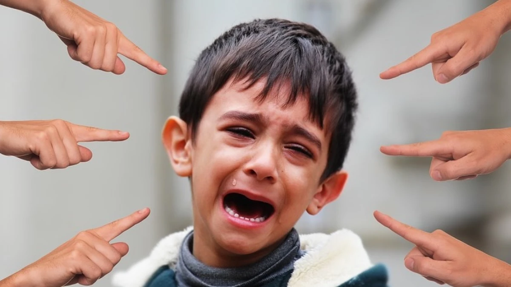

Tipos de Bullying

Bullying Físico
Incluye golpes, empujones, daño de propiedades y cualquier contacto físico que cause daño. Es el tipo más evidente pero también el más fácil de detectar.
- Golpes y empujones
- Robo de pertenencias
- Daño a la propiedad
- Gestos intimidantes

Bullying Verbal
Consiste en insultos, burlas, críticas constantes y humillación. Es más difícil de detectar pero genera daño psicológico considerable.
- Insultos y groserías
- Burlas permanentes
- Críticas hirientes
- Amenazas verbales
Ciberacoso (Cyberbullying)
Acoso a través de internet, redes sociales y dispositivos digitales. Es persistente, llega a millones y deja registros permanentes.
- Mensajes ofensivos
- Publicaciones hirientes
- Suplantación de identidad
- Difusión de fotos sin consentimiento
Bullying Social
Implica exclusión deliberada, rumores y daño a la reputación social. Afecta profundamente la autoestima y el sentido de pertenencia.